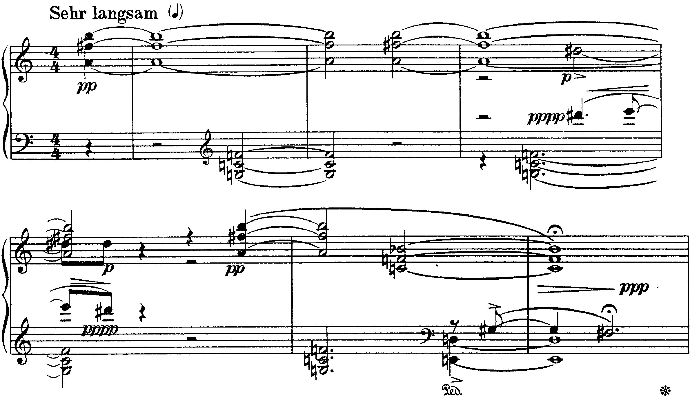
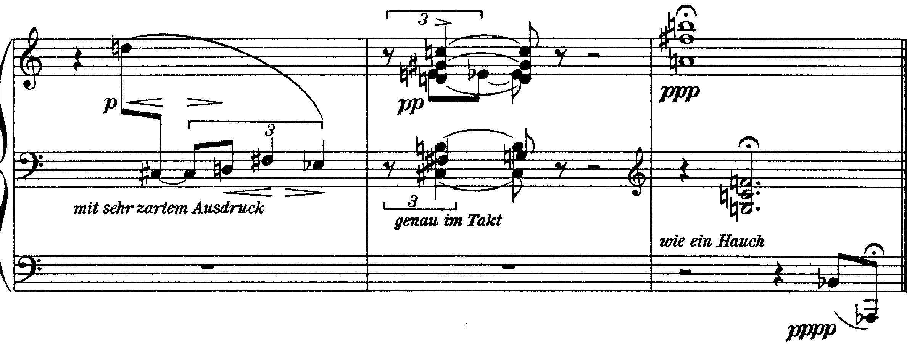

Due accordi di tre suoni reggono le nove battute dell’op. 19 n. 6. Non si siglano con i gradi; si riducono a una forma, si confrontano, si contano.
una notazione siffatta non è stata escogitata per “matematizzare” la musica, ma per arrivare a ridurre, in modo oggettivo e concettualmente scevro da riferimenti tonali, la ricchezza fenomenica degli eventi sonori a un numero notevolmente ristretto di categorie-base
I. Bent, Analisi musicale, p. 128
B4La numerazione dei dodici suoni, da do = 0 a si = 11, è quella della lezione 23, p. 263 · D. D’Urso, C. Bertolini, Il linguaggio della musica, 5° anno. L’analisi per insiemi non è nel libro: le definizioni sono da I. Bent, Analisi musicale, pp. 127–129, e S. Pasticci, Teoria degli insiemi e analisi della musica post-tonale.
Classe di altezze. L’insieme di tutte le note con lo stesso nome, in qualunque registro e con qualunque grafia enarmonica: il concetto, introdotto da Babbitt, si fonda sull’equivalenza delle ottave e sull’equivalenza enarmonica (Pasticci). Si indica con un numero da 0 a 11.
Insieme di classi di altezze. Il gruppo di note che si prelevano da un passo, ridotte a classi di altezze e senza ripetizioni (Bent, p. 128).
Forma normale. I numeri dell’insieme in ordine crescente, ruotati finché non occupano «la posizione più ravvicinata» (p. 127): la distanza fra il primo e l’ultimo è la minima possibile.
Forma primaria. La forma normale trasportata in modo che cominci da 0, confrontata con quella della sua inversione: si sceglie la più serrata verso sinistra. È «il punto di riferimento di tutte le possibili posizioni e trasformazioni» dell’accordo, e le forme primarie sono 208, catalogate da Forte con una sigla di due numeri: quanti suoni, e il posto nella tabella (pp. 127–128). Così la triade maggiore e la minore sono la stessa classe, 3-11 [0, 3, 7], e la settima diminuita è 4-28 [0, 3, 6, 9].
Vettore intervallare. Sei cifre che dicono quante seconde minori, seconde maggiori, terze minori, terze maggiori, quarte giuste e tritoni contiene l’insieme (ogni intervallo è contato con il suo rivolto): il «codice genetico» dell’insieme (p. 129). Due insiemi con lo stesso vettore ma con forme primarie diverse sono detti zeta-correlati e hanno una Z nella sigla.
Le due forme normali si trovano provando le rotazioni. Per {6, 9, 11} le rotazioni sono [6, 9, 11], [9, 11, 6] e [11, 6, 9], ampie cinque, nove e dieci semitoni: la prima è la più stretta. Trasportata a 0 diventa [0, 3, 5]; la sua inversione (ogni numero sottratto da 12) è [0, 2, 5], più serrata a sinistra, e quindi forma primaria: la sigla è 3-7, vettore 011010 (una seconda maggiore, una terza minore, una quarta). Per {0, 5, 7} due rotazioni sono ugualmente ampie, [0, 5, 7] e [5, 7, 0]: vince quella con il primo intervallo più piccolo, [5, 7, 0], che trasportata dà [0, 2, 7], la sigla 3-9, vettore 010020 (una seconda maggiore, due quarte). È l’accordo per quarte già incontrato nella Kammersymphonie e alla b. 11 dell’op. 11 n. 1 (lezione 1).
Contare gli intervalli dalla nota più grave come suona nel pezzo. La–fa♯–si, letto dal basso, dà nove e cinque semitoni; sol–do–fa dà cinque e cinque: due numeri che non dicono che cosa i due accordi hanno in comune. La forma normale toglie il registro, la forma primaria toglie trasposizione e inversione: solo dopo si confronta.


La partitura ha tre righi soltanto nelle bb. 7–9; prima la sinistra scrive in chiave di violino fino al terzo movimento della b. 5 e poi in chiave di basso. Le indicazioni sono poche e tutte rivolte al suono: Sehr langsam, pp per l’accordo iniziale, pppp per la figura acuta della sinistra, p e poi mit sehr zartem Ausdruck per la linea della b. 7, genau im Takt per le terzine della b. 8, wie ein Hauch («come un soffio») per l’ultimo accordo, ppp, con la corona.
Il pezzo comincia in levare con un solo accordo, la4–fa♯5–si5, pp, tenuto per cinque movimenti e ribattuto sul terzo della b. 2: la classe 3-7. Sul terzo movimento della b. 1 la sinistra aggiunge sotto sol3–do4–fa4: la classe 3-9. I due accordi non si mescolano, perché occupano due registri contigui ma distinti (il fa4, la nota più acuta del secondo, sta una terza maggiore sotto il la4, la più grave del primo) e non cambiano mai di disposizione; ma insieme formano un insieme di sei suoni, {0, 5, 6, 7, 9, 11}, che è la classe 6-Z12. Allen Forte, che ha analizzato il pezzo, chiama 6-Z12 «una specie di motto della composizione» e indica 3-7 e 3-9 come i tricordi preminenti dell’opera (The Structure of Atonal Music, p. 101).
I due tricordi hanno in comune una seconda maggiore (la–si nel primo, fa–sol nel secondo) e una quarta giusta (fa♯–si; do–fa e sol–do), e differiscono per il terzo intervallo: la terza minore fa♯–la in 3-7, una seconda quarta in 3-9. Il vettore lo dice in cifre (011010 contro 010020). All’ascolto il primo ha il colore di una settima priva della terza (si–fa♯–la), il secondo il vuoto delle quarte sovrapposte.
Alla b. 3 la destra aggiunge dentro l’accordo, fra il la4 e il fa♯5, un re♯5, minima con l’accento, p. Il risultato, re♯–fa♯–la–si, è la classe 4-27, e nelle sue note è una settima di dominante su si con la settima al basso: un accordo tonale riconoscibile, che nel contesto non ha alcuna funzione. Nello stesso momento la sinistra, pppp, suona molto in alto re♯6 e mi6, poi mi6 e re♯6: il semitono della sensibile verso la tonica di mi, ripetuto e subito ritirato. Il pezzo lascia emergere per un istante il fantasma di una cadenza, e lo lascia cadere senza risolverlo.
Scrivere «V42 di mi minore» alla b. 3. Le note ci sono; la funzione no, perché il mi arriva soltanto come nota di passaggio acuta e torna al re♯. Si scrive: insieme 4-27, la stessa classe della settima di dominante e della settima semidiminuita, senza risoluzione.
Alla b. 5 il primo accordo lascia il posto, nella destra, a do4–fa4–si♭4: ancora la classe 3-9, sol–do–fa trasportato una quarta sopra, ora nel registro centrale e tenuto per sei movimenti fino alla corona della b. 6. Sotto, la sinistra passa in chiave di basso: un mi2 con il re3, settima minore al grave, e una linea in semitoni discendenti, sol♯3–sol3–fa♯3 (classe 3-1), che arriva sulla corona. Con il si♭4 e il sol♯3 della b. 5 e con il re3 il pezzo ha già presentato undici dei dodici suoni.
La b. 7 è l’unico momento melodico: dopo una pausa di un quarto, un re5 della destra scende con un salto di quasi due ottave al do♯3 e continua re3–fa♯3–mi♭3, in terzine, mit sehr zartem Ausdruck. Il do♯3 è il dodicesimo suono, l’ultimo che mancava: il totale cromatico si completa soltanto qui, a due battute dalla fine. La linea do♯–re–fa♯–mi♭ è la classe 4-4 [0, 1, 2, 5]. La b. 8, genau im Takt, pp, è una sola terzina ripetuta in due mani: re4–sol♯4–do5 con mi4 e poi mi♭4 nella destra, do♯3–si3 con fa♯3 e poi sol3 nella sinistra. La b. 9 riporta i due accordi iniziali nel loro registro, insieme e senza levare, ppp, e sotto, pppp, il si♭2 e il la♭1, l’intervallo di nona più grave del pezzo, sulla corona.
La forma è dunque circolare: esposizione dei due tricordi (bb. 0–4), trasformazione e movimento (bb. 5–8), ritorno (b. 9). I due accordi sono i soli materiali che tornano; tutto il resto compare una volta sola.
Contare gli insiemi senza leggere i registri. Do–fa–si♭ della b. 5 è la stessa classe di sol–do–fa, ma ha un altro posto nella tastiera e un altro ruolo: prende il posto dell’accordo acuto, non di quello grave. L’analisi dice la classe e dice dove sta.
Il metodo vede le parentele fra gruppi di suoni che l’orecchio non saprebbe nominare: che sol–do–fa e do–fa–si♭ sono lo stesso oggetto, che la–fa♯–si e sol–do–fa insieme formano un insieme che il pezzo ripresenta alla fine, che la b. 3 contiene la classe della settima di dominante. Non vede il registro, la durata, la dinamica, l’ortografia, la funzione: proprio le cose che, nell’op. 19 n. 6, separano i due accordi e danno al re♯–mi della b. 3 il suo carattere di reminiscenza.
Bent avverte che la scelta dei gruppi da analizzare, la segmentazione, «è un procedimento estremamente delicato, perché l’intera analisi dipende dal fatto che sia attuato con sensibilità musicale»: pause, articolazione e fraseggio offrono indizi, ma non bastano (Analisi musicale, p. 132). In un pezzo come questo la segmentazione è suggerita dalla partitura stessa, che separa i materiali per registro e per durata; in un pezzo più fitto (op. 11 n. 1, lezione 1) va dichiarata e motivata.
Scegliere i gruppi in modo da ottenere le classi che si cercano. Un insieme che si trova solo prendendo note lontane e di voci diverse non è un dato dell’analisi: lo è se il pezzo lo presenta come unità (un accordo, una figura, una frase).
Sulla trascrizione della slide «La partitura», riduci a forma primaria e nomina con la sigla di Forte: 1. l’accordo della destra alla b. 5; 2. la linea della sinistra delle bb. 5–6; 3. la linea della b. 7 dal do♯3; 4. le note della destra alla b. 8.
Si sceglie il gruppo (e si dice perché); si scrivono le classi di altezze; si cerca la forma normale, la rotazione più stretta; la si trasporta a 0 e la si confronta con l’inversione: la più serrata a sinistra è la forma primaria, con la sua sigla. Il vettore dice il contenuto intervallare.
Due tricordi, 3-7 e 3-9, che insieme formano 6-Z12; il secondo trasportato alla b. 5; una settima di dominante senza funzione alla b. 3; il totale cromatico completo solo alla b. 7; il ritorno dei due accordi alla b. 9. L’analisi integrale scritta dello stesso pezzo è la lezione 9.
La lezione si chiude con il solfeggio: si intonano, a voci divise, i tre suoni di la–fa♯–si e poi quelli di sol–do–fa, dal grave. La lezione seguente è dedicata agli intervalli fuori dalla tonalità, all’ascolto e alla voce.
Compiti per la prossima volta
Scrivi otto battute per pianoforte: nella destra solo accordi della classe 3-7, nella sinistra solo accordi della classe 3-9, ogni volta in una trasposizione diversa e con la disposizione della b. 1; la b. 8 è uguale alla b. 1. Sotto ogni accordo scrivi la trasposizione.
Sul quaderno, a matita. La foto del lavoro finito va su Classroom. Nel Workbook: apri l’esercizio C5-U7-L2-04 ↗
Compiti per la prossima volta
n. 386 e n. 387 parlato · n. 388 e n. 389 cantato · n. 390 e n. 391 ritmico
Ogni pezzo a tempo, senza fermarti: il parlato a nomi, il cantato prendendo il primo suono dalla tastiera, il ritmico battendo la pulsazione.
Scrivi la linea del basso sul quaderno, in chiave di basso: otto battute in 3/4, fa♯ minore. Il primo suono è la. Prima il riferimento, poi tutto due volte, ogni coppia di battute due volte, il collegamento 1–4, 3–6 e 5–8, e tutto per controllare.
Il riferimento: accordo di tonica e primo suono
Il dettato · otto battute
Le sezioni (riferimento, tutto, le coppie, il collegamento) si ascoltano una per una e si ripetono quanto serve; le fasi fanno la procedura della classe, con gli annunci e le pause, da qualunque punto.
Sul quaderno scrivi in testa la sigla C5-D-U07-L2. Si corregge all’inizio della prossima lezione.
Compiti per la prossima volta
Scrivi un contrappunto di terza specie (quattro note contro una) sopra il canto fermo, in modo eolio (finale la): undici battute. Comincia su una consonanza perfetta, alla cadenza la sensibile sale alla finale, niente quinte e ottave consecutive.
Sul quaderno, con la sigla C5-CP-U07-L2 in testa; la foto va su Classroom.
Realizza a quattro parti il basso senza numeri: sedici battute in 4/4, do maggiore. Trova tu l’accordo di ogni nota (la regola dell’ottava è il punto di partenza) e scrivilo sotto; poi il soprano, poi le voci interne. Accordi che puoi usare: tutto quello studiato, e una modulazione a un tono vicino. Il basso modula: trova dove, e in quale tonalità arriva.
Sul quaderno, con la sigla C5-BD-U07-L2 in testa; la foto va su Classroom.
Armonizza a quattro parti il canto dato: sedici battute in 4/4, sol maggiore. Prima le cadenze, poi il basso per intero, e solo alla fine contralto e tenore. Accordi che puoi usare: tutto quello studiato, e una modulazione a un tono vicino.
Sul quaderno, con la sigla C5-CD-U07-L2 in testa; la foto va su Classroom.
Scritto: Otto battute su due tricordi (Workbook, esercizio C5-U7-L2-04), sul quaderno; la foto va su Classroom. Solfeggio dal quaderno di lettura: parlato n. 386, 387; cantato n. 388, 389; ritmico n. 390, 391 (a tempo, senza fermarsi). Dettato C5-D-U07-L2 dalla pagina della lezione (sezioni da ascoltare, o le fasi della procedura guidata), sul quaderno con la sigla. Contrappunto di terza specie sul canto fermo (C5-CP-U07-L2). Basso senza numeri da realizzare a quattro parti (C5-BD-U07-L2). Canto dato da armonizzare a quattro parti (C5-CD-U07-L2).
In classe
A nomi, a tempo, con la mano che batte. Chi si ferma riparte dalla battuta dopo.
Apri il n. 382 nel quaderno di lettura ↗ chiave di tenore · 2/2 · la maggiore
In classe
Si prende il tono dalla tastiera, si canta insieme; poi a gruppi.
Apri il n. 383 nel quaderno di lettura ↗ chiave di violino · 4/4 · mi♭ maggiore
Apri il n. 384 nel quaderno di lettura ↗ chiave di violino · 4/4 · la minore
In classe
Tutti insieme, battendo la pulsazione. Poi a file, due battute a testa.